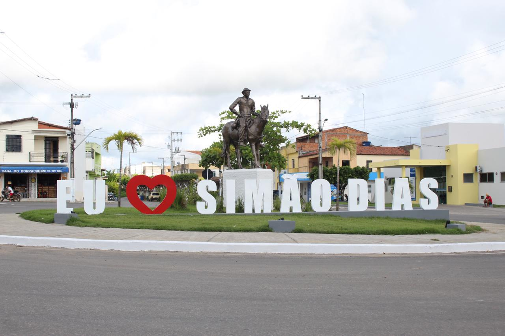

Simao Dias
História
Em 15 de março de 1850 o território que pertencia a atual Simão Dias foi elevada por lei a Vila, denominada "Senhora Santa Ana de Simão Dias", Simão Dias (de 1912 a 1944: Anápolis) recebeu status de município pelo decreto nº 51 de 12 de junho de 1890.
Após se tornar uma cidade, Simão Dias teve como primeiro prefeito, escolhido por meio de uma votação, o coronel e advogado Rafael Arcanjo Montalvão. Um marco histórico da sua fundação foi o Vaqueiro Simão Dias, que chegou com seu rebanho nessa terra que era ocupada por índios.
fonte: https://pt.wikipedia.org/wiki/Sim%C3%A3o_Dias/Pontos Turísticos
Simao Dias
O município destaca-se também no turismo, com o ponto turístico da Serra do Cruzeiro, um local aconchegante para um bom passeio de domingo. Lá é possível visitar a imagem da, Senhora de Santa'Ana, a padroeira do município. A imagem, que mede, aproximadamente, 10 metros de altura, é a maior representação da santa na região. O ponto turístico está em uma altitude de 424 m, de onde se tem a vista panorâmica da cidade e ainda apresenta beleza e valor histórico. Também chama atenção a praça Barão de Santa Rosa, localizada no centro da cidade. Outro atrativo é a existência de cavernas, como a Toca da Raposa, a maior caverna do estado, e também abismos, como a Furna do Dorinha, de 50 metros de profundidade.
Serra do Cruzeiro
Serra do Cruzeiro, um local aconchegante para um bom passeio de domingo. Lá é possível visitar a imagem da, Senhora de Santa'Ana, a padroeira do município. A imagem, que mede, aproximadamente, 10 metros de altura, é a maior representação da santa na região. O ponto turístico está em uma altitude de 424 m, de onde se tem a vista panorâmica da cidade e ainda apresenta beleza e valor histórico. Também chama atenção a praça Barão de Santa Rosa, localizada no centro da cidade. Outro atrativo é a existência de cavernas, como a Toca da Raposa, a maior caverna do estado, e também abismos, como a Furna do Dorinha, de 50 metros de profundidade.
Dados Gerais de acordo com o IBGE
| Prefeito (a) | Cristiano Viana Meneses | Site do município | https://simaodias.se.gov.br/ |
| Área territorial | 560,199 km² |
| População estimada | 40.724 pessoas |
| Densidade demográfica | 68,54 hab/km² |
| IDHM | 0,604 |
| PIB per capita | R$ 15.786,83 |